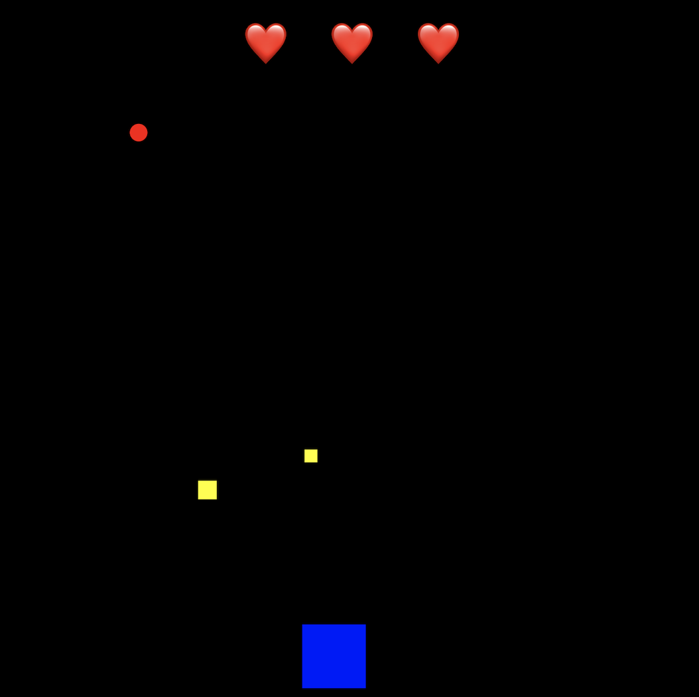

Catch-Fall Game
Overview: Move your head left and right to catch the yellow falling items and avoid red ones. You must allow camera access in order to play this game, as it utilizes face tracking to control your character.
This game was created to explore game-making in tandem with the ml5.js library. Since it incorporates facial tracking for the controls, it requires that you allow the site to access your camera.
In Catch-Fall, your objective is to move your blue character around the bottom of the screen to catch the yellow pieces and avoid the red ones. This is done by moving your head to the left and right– the tracking focuses on the top-middle point of your forehead in order to move the character. Each level requires a certain number of yellow pieces to be caught in order to advance– your progress will be shown at the bottom of the screen. The required number to catch and the frequency with which the red and yellow pieces fall will increase at each level. You will have 3 lives to advance as far as possible until the game ends.